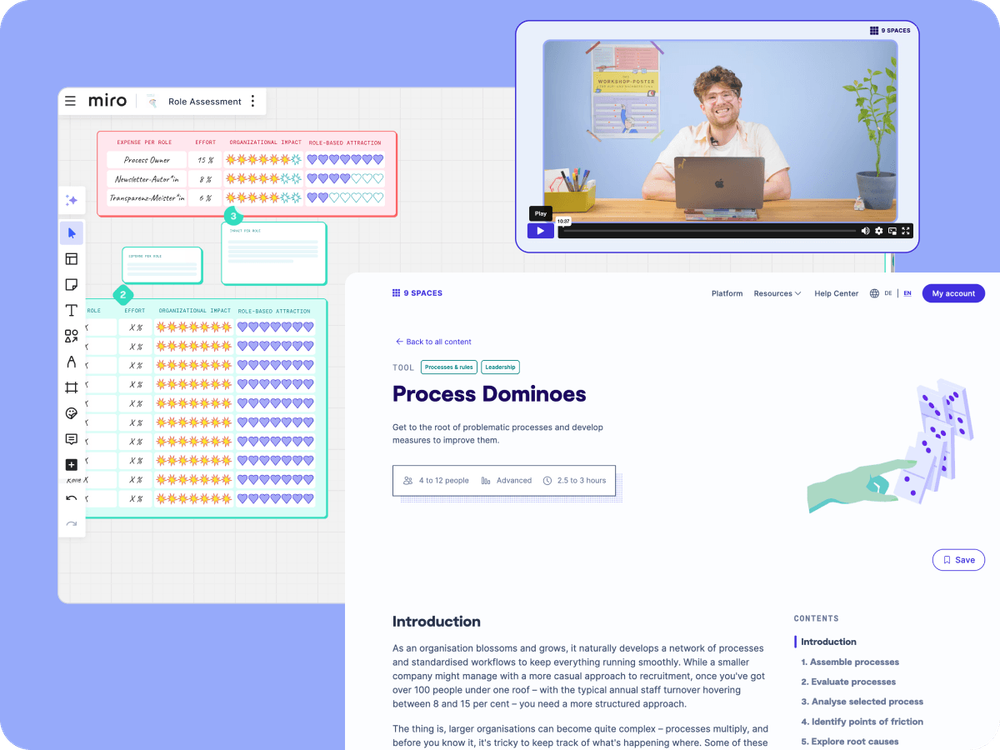

Business
5+ seats
Access for multiple team members within a tailored plan
We believe that fast-moving industries need strong teams and smooth processes. Strengthen collaboration and make your organisation future-ready with 9 Spaces methods.
Here you’ll learn how to transform your world of work in transport, logistics and tourism.

Many of Lufthansa Technik’s 4,500 employees were stuck in workdays shaped by endless meetings. With support from 9 Spaces, an internal facilitator community gradually built a more conscious and effective meeting culture.
With more than 150 tried-and-tested workshop methods for online and offline use, 9 Spaces supports you with topics such as conflict, leadership, meetings, processes and sustainability.

They help you tackle key challenges such as staff shortages and digitalisation in a practical way.
Access for multiple team members within a tailored plan
All features and benefits at a glance?
Our team is happy to support you and your team in finding the perfect solution for your organisation.